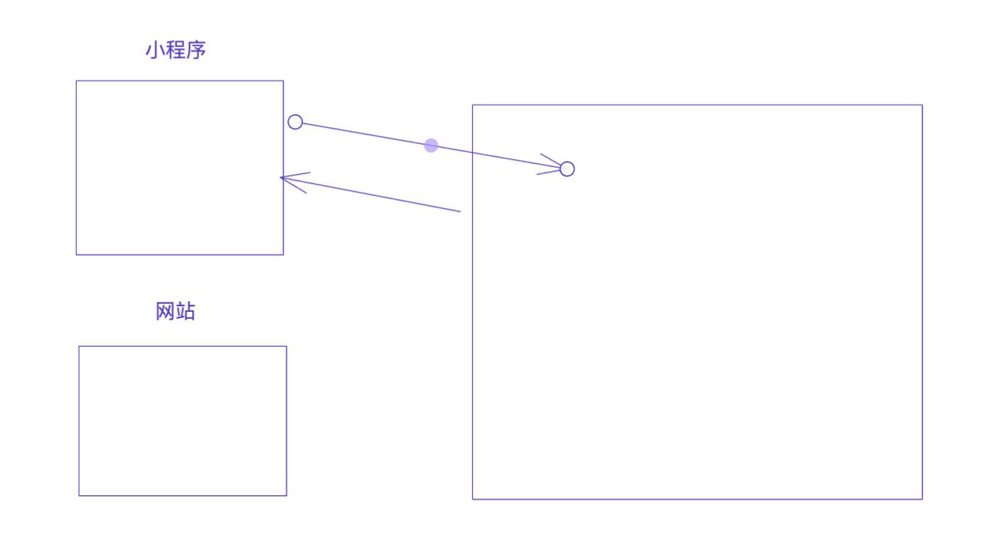

2.网络请求流程
1.前戏
IPV4 地址
接入互联网的设备，需要一个IP来代指次电脑
内网IP & 公网IP

之前我们自己在一个局域网内为电脑分配的IP都称为内网IP，基于内网IP可以在一个局域网内进行相互通信（也需要相关的配置）。
如果想要通过互联网进行通信，就必须借助公网IP。
云服务器
可以通过一个外网IP地址访问 链接云服务器
端口
假设，你在腾讯租了一台云服务器（外网IP:123.206.15.88），然后又开发了 2 个网站运行在服务器上。
- 网站A：使用8001端口，那么用户在自己电脑上或手机上访问时指定 IP和端口 即可，如：
123.206.15.88:8001 - 网站B：使用8002端口，那么用户在自己电脑上或手机上访问时指定 IP和端口 即可，如：
123.206.15.88:8002
每个端口代表一个进程
域名
让域名和IP创建对应关系，用户只需要记住域名就可以了
www.baidu.com --> 110.242.68.3
www.taobao.com --> 121.18.239.232
...
UDP & TCP 链接
- TCP
（Transmission Control Protocol，传输控制协议）是面向连接的协议，也就是说，在收发数据前，必须和对方建立可靠的连接，然后再进行收发数据。
- UDP
是⼀个⽆连接的简单的⾯向数据报的传输层协议。
UDP不提供可靠性， 它只是把应⽤程序传给IP层的数据报发送出去， 但是并不能保证它们能到达⽬的地。 由于UDP在传输数据报前不⽤在客户和服务器之间建⽴⼀个连接， 且没有超时重发等机制， 故⽽传输速度很快。
2.网络编程
-
bs架构
Browser / server
-
CS架构
Client / server

http
http协议特点：无状态的短连接。
一次请求和一次响应后，断开连接
- cookie
- session
GET/POST
在浏览器中提交数据
主要的区别就是他们存放参数的位置
-
GET
-
POST
form表单，
你看不到
请求头
浏览器本质上发送请求时，包含请求头和请求体。
- GET请求
- 只有请求头 + 没有请求体
- 请求头之间用 \r\n
- 请求头和请求体之间用 \r\n\r\n
- POST请求
- 只有请求头 + 有请求体
- 请求头之间用 \r\n
- 请求头和请求体之间用 \r\n\r\n
3.web框架